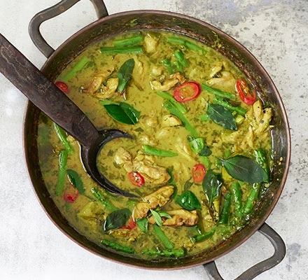

Thai Green Curry
Blow people away with our ultimate Thai curry. It takes more
effort, but once you taste the sour and sweet flavours tamed
by coconut milk you won't look back
- Prep: 1 hr
- Cook: 30 mins
- More effort
- Serves 4
Ingredients
- 1 tsp coriander seeds
- ½ tsp cumin seeds
- 1 tbsp shrimp paste
- 3 garlic cloves , chopped
- 3 shallots , peeled and chopped
- handful coriander stalks , roughly chopped
- 12 green bird's-eye chillies , deseeded if you don't like it very hot
- half a thumb-sized piece galangal , chopped
- half a finger-sized piece turmeric , roughly chopped
- 2 sticks lemongrass , chopped
For the curry
- 2 x 400g cans coconut milk
- 1 tbsp light brown soft sugar
- 6 skinless chicken thighs , roughly chopped
- 4 lime leaves , scrunched
- 2 tbsp fish sauce
- 100g green beans , cut in half
- 1-2 limes (to taste), cut in half
- handful Thai basil leaves
- 1 red chilli , finely sliced
- cooked jasmine rice , to serve
Steps
- Heat a dry frying pan and add the coriander and cumin seeds.
Toast until they begin to colour and release their aromas.
Remove from the heat, then grind to a powder using a pestle and mortar.
Wrap the shrimp paste in foil and in the same dry pan, ‘toast’ the foil
package for 2 mins on each side.
- Pound the garlic using a pestle and mortar, then add the shallots, coriander,
chillies, galangal, turmeric and lemongrass. Finally, add the shrimp paste and
ground spices and pound to a smoothish paste. Alternatively, whizz everything
in a small blender or mini chopper in the same order or, for the best and
easiest results, half pound in a pestle and mortar, then finish in the chopper.
The recipe makes double so save half, but you can also make a much bigger batch
if you want.
- To make the curry, open the cans of coconut milk, carefully remove the thick cream and
spoon it into a warm wok or large frying pan. Cook it slowly, stirring all the time, until
it reduces to a thick paste and the oil starts to separate. Add the sugar, let it dissolve
then cook until caramelised and smoking. Stir in the green curry paste and cook for 1-2 mins.
Add the chicken and stir well to coat in the paste.
- Pour in the rest of the coconut milk, scatter in the lime leaves and splash in half the fish
sauce. Let the sauce bubble for about 10 mins until the oil in the coconut milk starts to come
through to the surface and the chicken is cooked. Add the green beans and squeeze in the juice
of 1 lime. Taste the sauce – you are after a hit of salt (from the fish sauce) sweet,
(from the sugar) and sour (lime juice) – and adjust accordingly. Simmer everything for 5 mins
more until the beans are just cooked. Scatter over the Thai basil and red chilli, then bring
to the table in the cooking dish and serve with jasmine rice.